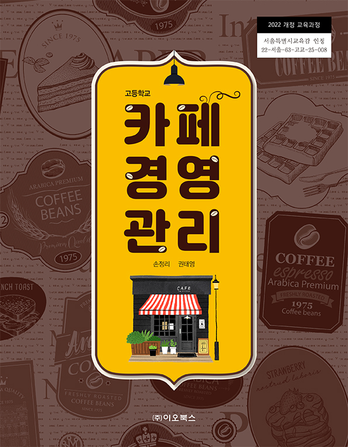
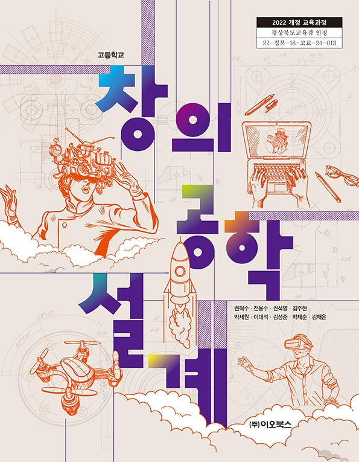
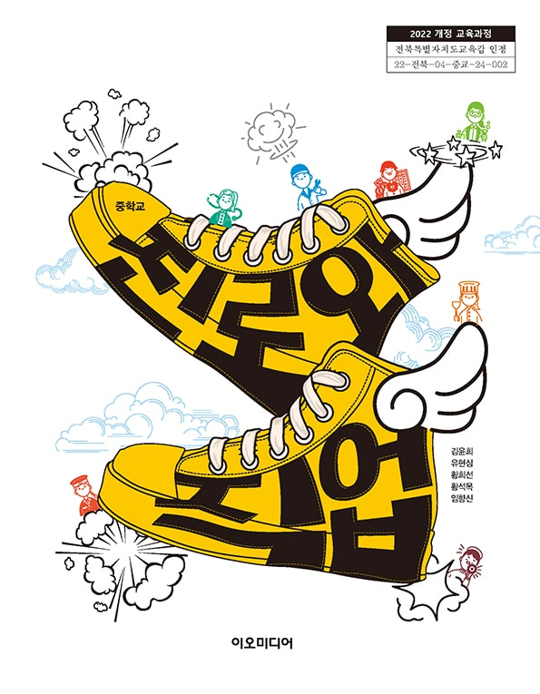
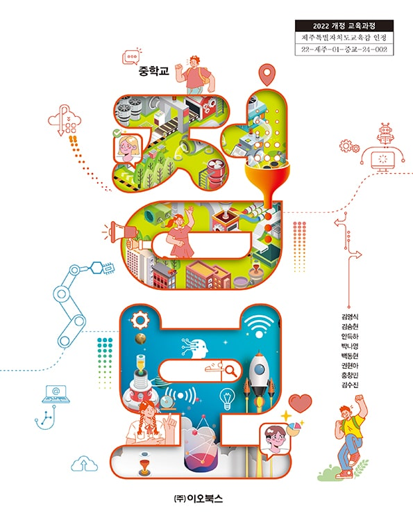

01 / 03
주요 콘텐츠 바로가기
TEACHING & LEARNING
교수학습자료 전체보기 내 교과서에서 시작하는 수업 준비
교과서를 찾고, 단원에 맞는 수업자료와 교육자료를 만나보세요.
01 내 교과서 찾기02 단원 살펴보기03 필요한 자료 이용
선택한 교과서 · 예시
중학교 정보
2022 개정 교육과정
이 교과서의 단원과
자료로 이어집니다.
자료로 이어집니다.
교과서별 단원 구조
다양한 파일 형식PDFHWPPPTZIP
교과서를 찾은 뒤 단원을 선택하는 탐색 흐름입니다.
탐색 흐름을 보여주는 정적 디자인 예시입니다. 실제 단원·자료·파일은 연결되지 않았습니다.
DIGITAL LEARNING
책에서 디지털 활동으로.
eotextbook에서 이어지는 새로운 배움의 경험.
eotextbook 바로가기 외부 서비스 · 연결 URL 확인 후 제공
NEWS
전체보기 →공지사항
TOGETHER
함께하는 기업·기관
기관 ALPHA기관 로고 자리표시자교육 BETA기관 로고 자리표시자기업 GAMMA기관 로고 자리표시자기관 DELTA기관 로고 자리표시자교육 EPSILON기관 로고 자리표시자